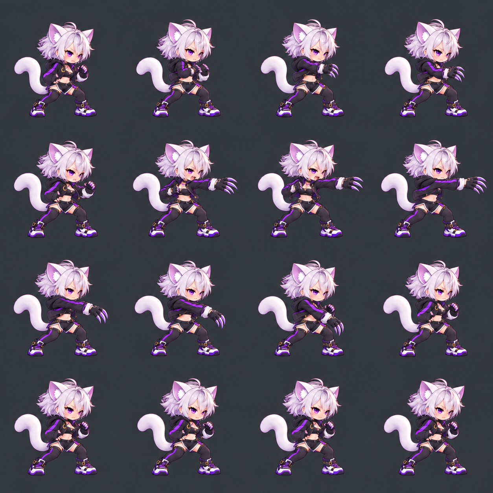

준비 → 발톱을 크게 뻗기 → 아래로 회수. 미승인 검토용이며 게임에는 등록하지 않았습니다.
12 FPS는 약 1.33초의 느린 동작 검토입니다. 실제 기술의 21 tick(약 0.35초)이나 적중 시점을 바꾸지 않습니다.
원본 5번을 2번 위치로 옮긴 재생 순서를 기본으로 표시합니다. 원본 PNG는 변경하지 않았습니다. 투명화·128픽셀 셀 정규화 전 시안입니다.
일시정지한 프레임정리한 순서원본 순서
